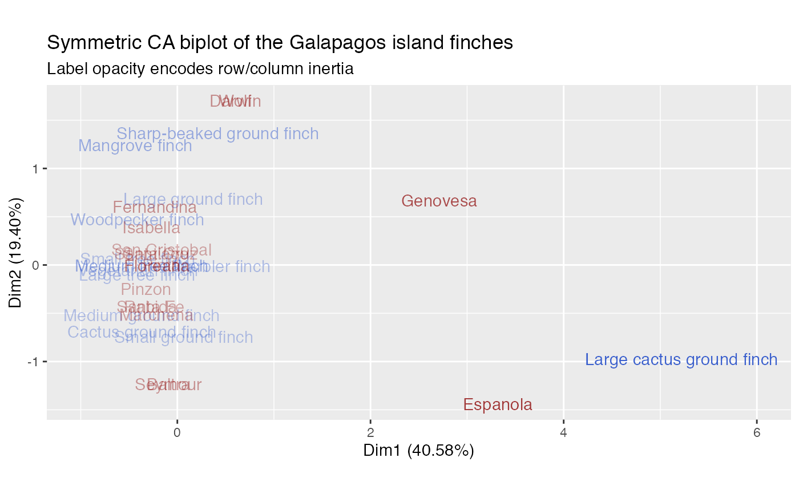
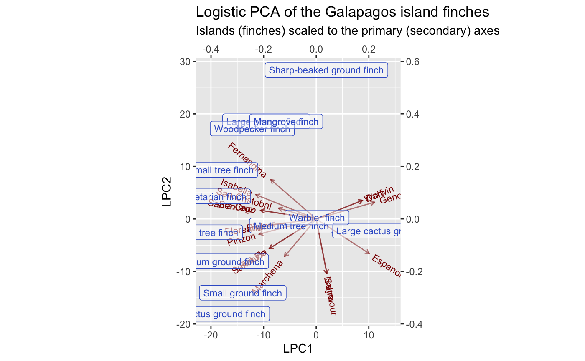
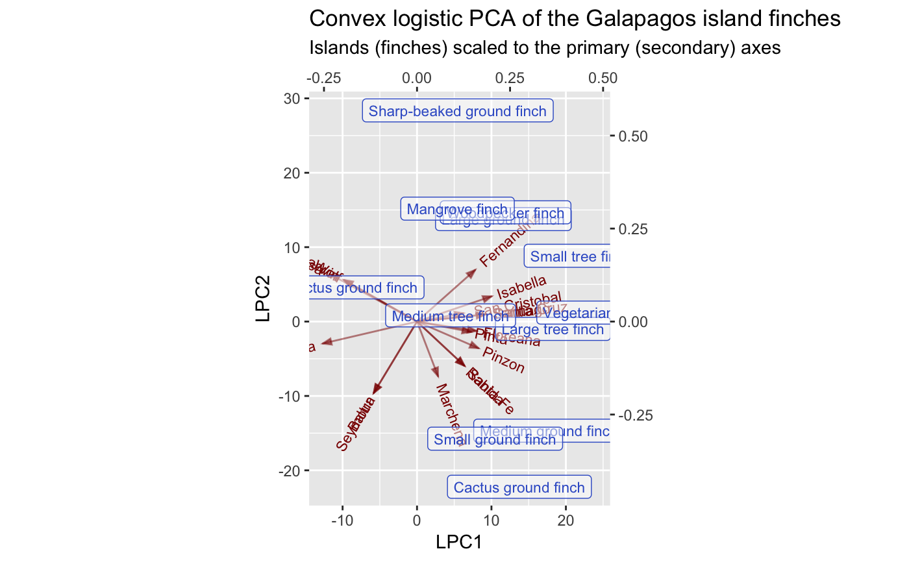

Site-species occurrence data for Galapagos finches
finches.RdSite-species occurrence data for Galapagos finches
Format
A data frame.
Source
These data are taken from Sanderson (2000). They are available in a different format in the cooccur package.
References
Sanderson JG (2000) "Testing Ecological Patterns." American Scientist, 88(4), 332--339. doi: 10.1511/2000.4.332
Examples
# Correspondence analysis of Sanderson finches data finches %>% ca::ca() %>% as_tbl_ord() %>% confer_inertia(.5) %>% augment() %>% print() -> finches_ca#> # A tbl_ord of class 'ca': (13 x 12) x (17 x 12)' #> # 12 coordinates: Dim1, Dim2, ..., Dim12 #> # #> # U: [ 13 x 12 | 4 ] #> Dim1 Dim2 Dim3 ... | .name .mass .dist .inertia #> | <chr> <dbl> <dbl> <dbl> #> 1 0.165 0.685 0.320 | 1 Large groun… 0.115 0.573 0.0377 #> 2 -0.368 -0.522 0.0167 ... | 2 Medium grou… 0.107 0.489 0.0255 #> 3 0.0685 -0.743 -0.126 | 3 Small groun… 0.115 0.526 0.0317 #> 4 0.420 1.37 0.417 | 4 Sharp-beake… 0.0820 0.994 0.0810 #> 5 -0.365 -0.691 0.244 | 5 Cactus grou… 0.0984 0.608 0.0364 #> # … with 8 more rows #> # #> # V: [ 17 x 12 | 4 ] #> Dim1 Dim2 Dim3 ... | .name .mass .dist .inertia #> | <chr> <dbl> <dbl> <dbl> #> 1 -0.0909 -1.23 0.274 | 1 Seymour 0.0328 1.10 0.0398 #> 2 -0.0909 -1.23 0.274 ... | 2 Baltra 0.0328 1.10 0.0398 #> 3 -0.269 0.389 -0.783 | 3 Isabella 0.0902 0.657 0.0389 #> 4 -0.233 0.601 -0.933 | 4 Fernandina 0.0820 0.794 0.0517 #> 5 -0.221 0.117 -0.136 | 5 Santiago 0.0820 0.349 0.00998 #> # … with 12 more rowsfinches_ca %>% ggbiplot(aes(label = .name)) + geom_u_text(aes(alpha = .inertia), color = "royalblue3") + geom_v_text(aes(alpha = .inertia), color = "darkred") + scale_alpha_continuous(range = c(.3, 1), guide = "none") + ggtitle( "Symmetric CA biplot of the Galapagos island finches", "Label opacity encodes row/column inertia" )# Logistic SVD of Sanderson finches data finches %>% t() %>% logisticSVD() %>% as_tbl_ord() %>% augment() %>% print() -> finches_lsvd#>#> # A tbl_ord of class 'lsvd': (17 x 2) x (13 x 2)' #> # 2 coordinates: LSC1 and LSC2 #> # #> # U: [ 17 x 2 | 1 ] #> LSC1 LSC2 | .name #> | <chr> #> 1 -29.6 -27.3 | 1 Seymour #> 2 -29.6 -27.3 | 2 Baltra #> 3 39.4 22.9 | 3 Isabella #> 4 39.9 40.6 | 4 Fernandina #> 5 20.2 3.50 | 5 Santiago #> # … with 12 more rows #> # #> # V: [ 13 x 2 | 2 ] #> LSC1 LSC2 | .name .mu #> | <chr> <dbl> #> 1 0.233 0.231 | 1 Large ground finch 9.02 #> 2 0.223 -0.216 | 2 Medium ground finch 5.97 #> 3 0.164 -0.318 | 3 Small ground finch 9.86 #> 4 0.0787 0.548 | 4 Sharp-beaked ground finch 6.88 #> 5 0.240 -0.451 | 5 Cactus ground finch 5.85 #> # … with 8 more rowsfinches_lsvd %>% ggbiplot( aes(x = LSC1, y = LSC2, label = .name), sec.axes = "v", scale.factor = 100 ) + geom_u_vector(alpha = .5, color = "darkred") + geom_u_text_radiate(size = 3, color = "darkred") + geom_v_label(size = 3, alpha = .5, color = "royalblue3") + ggtitle( "Logistic SVD of the Galapagos island finches", "Islands (finches) scaled to the primary (secondary) axes" )# Logistic PCA of Sanderson finches data finches %>% t() %>% logisticPCA() %>% as_tbl_ord() %>% augment() %>% print() -> finches_lpca#> # A tbl_ord of class 'lpca': (17 x 2) x (13 x 2)' #> # 2 coordinates: LPC1 and LPC2 #> # #> # U: [ 17 x 2 | 1 ] #> LPC1 LPC2 | .name #> | <chr> #> 1 2.02 -10.4 | 1 Seymour #> 2 2.02 -10.4 | 2 Baltra #> 3 -11.5 4.62 | 3 Isabella #> 4 -8.64 7.51 | 4 Fernandina #> 5 -10.6 1.65 | 5 Santiago #> # … with 12 more rows #> # #> # V: [ 13 x 2 | 2 ] #> LPC1 LPC2 | .name .mu #> | <chr> <dbl> #> 1 -0.190 0.372 | 1 Large ground finch 3.00 #> 2 -0.365 -0.162 | 2 Medium ground finch 1.10 #> 3 -0.279 -0.281 | 3 Small ground finch 1.91 #> 4 0.0389 0.568 | 4 Sharp-beaked ground finch 1.79 #> 5 -0.353 -0.361 | 5 Cactus ground finch -0.451 #> # … with 8 more rowsfinches_lpca %>% ggbiplot( aes(x = LPC1, y = LPC2, label = .name), sec.axes = "v", scale.factor = 50 ) + geom_u_vector(alpha = .5, color = "darkred") + geom_u_text_radiate(size = 3, color = "darkred") + geom_v_label(size = 3, alpha = .5, color = "royalblue3") + ggtitle( "Logistic PCA of the Galapagos island finches", "Islands (finches) scaled to the primary (secondary) axes" )# Convex logistic PCA of Sanderson finches data finches %>% t() %>% # omit finches present on every island {.[, ! apply(., 2, all), drop = FALSE]} %>% convexLogisticPCA() %>% as_tbl_ord() %>% augment() %>% print() -> finches_clpca#> # A tbl_ord of class 'clpca': (17 x 2) x (12 x 2)' #> # 2 coordinates: LPC1 and LPC2 #> # #> # U: [ 17 x 2 | 1 ] #> LPC1 LPC2 | .name #> | <chr> #> 1 -5.81 -9.59 | 1 Seymour #> 2 -5.81 -9.59 | 2 Baltra #> 3 10.0 3.39 | 3 Isabella #> 4 7.81 6.94 | 4 Fernandina #> 5 9.14 0.958 | 5 Santiago #> # … with 12 more rows #> # #> # V: [ 12 x 2 | 2 ] #> LPC1 LPC2 | .name .mu #> | <chr> <dbl> #> 1 0.232 0.275 | 1 Large ground finch 1.54 #> 2 0.355 -0.293 | 2 Medium ground finch 1.18 #> 3 0.210 -0.315 | 3 Small ground finch 1.54 #> 4 0.110 0.568 | 4 Sharp-beaked ground finch 0.357 #> 5 0.275 -0.444 | 5 Cactus ground finch 0.875 #> # … with 7 more rowsfinches_clpca %>% ggbiplot( aes(x = LPC1, y = LPC2, label = .name), sec.axes = "v", scale.factor = 50 ) + geom_u_vector(alpha = .5, color = "darkred") + geom_u_text_radiate(size = 3, color = "darkred") + geom_v_label(size = 3, alpha = .5, color = "royalblue3") + ggtitle( "Convex logistic PCA of the Galapagos island finches", "Islands (finches) scaled to the primary (secondary) axes" )